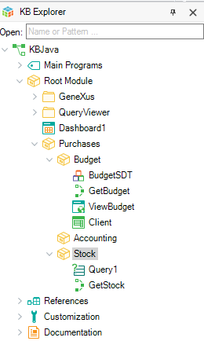
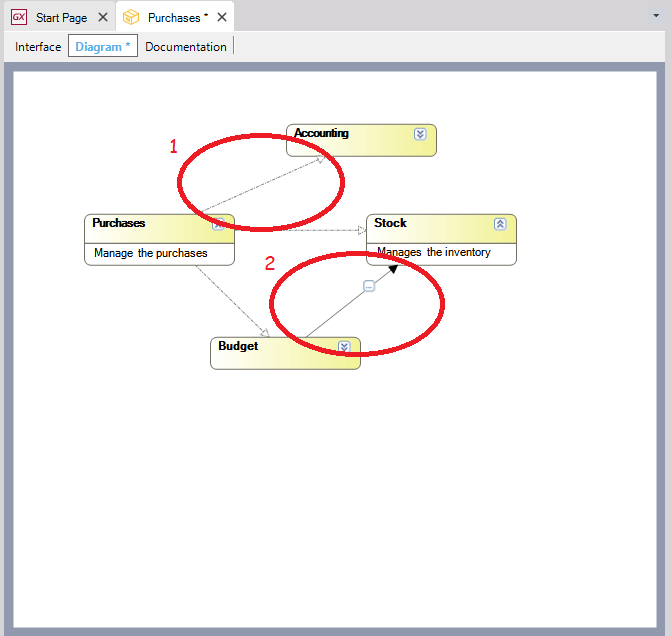
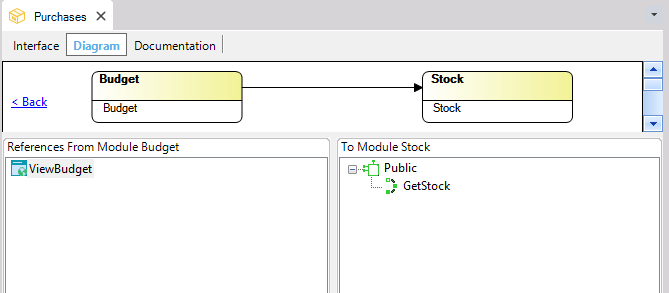

The Module Diagram Tab enables you to create a diagram showing the relations between Module objects. This Diagram is meant mainly to allow analysts easy comprehension of the Knowledge Base at a conceptual level, and the analysis of dependencies between its modules. To view this tab, open the module by selecting it from the KB Explorer and press F12 or right-click on the module and select Open. Each Module is represented by a yellow rectangle, and the SubModule and Reference relationships are represented in the diagram as follows:   The SubModule relationship (1 in the above image) is set when a Module is part of another Module (i.e. a submodule) and the Reference relationship (2 in the above image) is determined when an object that is part of one module uses an object that belongs to a different module. Every time a Module is opened the Diagram Tab shows the current relationship between the modules that belong to that diagram. Once the diagram Tab is open, drag and drop the modules from the Folder View into the diagram, and relationships will be shown automatically. Objects in this Diagram can be arranged manually or automatically using the Arrange Nodes option (Ctrl+G). The Arrange Nodes feature can be used repeatedly until you get a "stable" diagram. Adding objects to a diagram can be done in any of the following ways:
1 These options will add the modules related to the one selected upon right-clicking. Tips
The SubModule relationship (number 1 in the previous image) is a one-way line and the reference relationship (number 2 in the previous image) is a one-way line containing a . When clicking the on a Reference relationship line, the following window will open up:  It displays the objects from the source Module that reference an object of the opposite Module. Clicking on an object from the source Module will display the referenced objects grouped by Object Visibility property. Tip: Use the "Back" option to go back to the Modules Diagram. Modules can also be added to a Diagram Object. See also
|